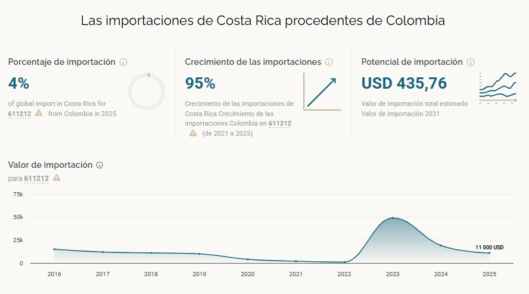
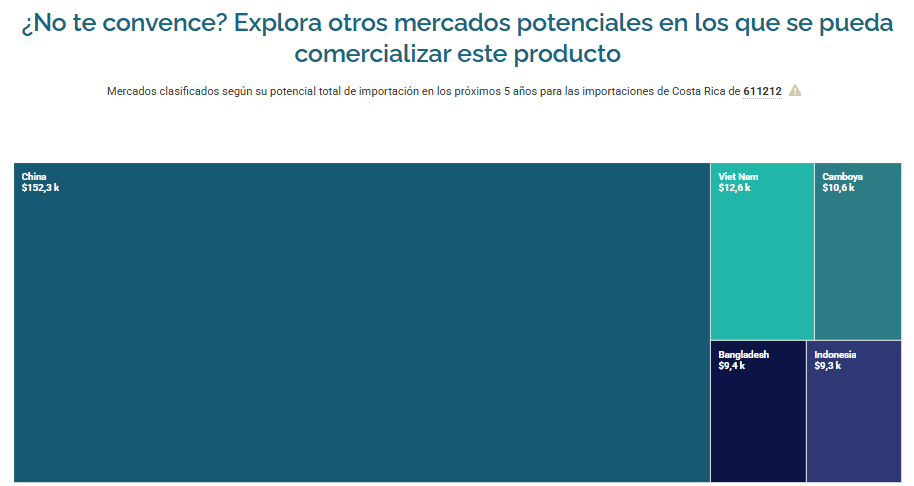
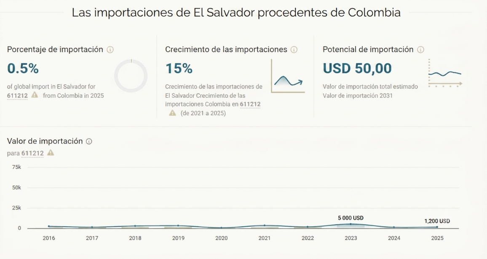
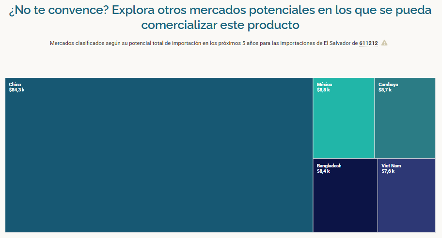
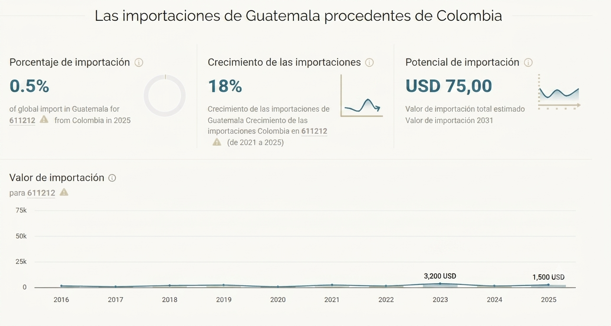
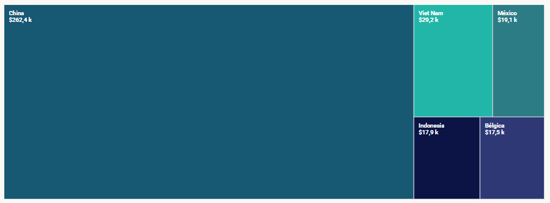

Estudio de la Realidad Empresarial
ACERCA DE NOSOTROS
ARTEIKOS S.A.S. con sede en Medellín, Antioquia. También llamado bajo la marca comercial RYAD para su línea de ropa deportiva de marca propia, y la línea Leggins Aquafit para ropa deportiva femenina.
Lo que hace innovadora a la propuesta no es el producto en sí (uniformes deportivos), sino la combinación de tres elementos que rara vez coexisten en una pyme de confección colombiana: personalización total por cliente (diseño, tallaje de 4 a 5XL), una reputación de cumplimiento medible y verificable (97-100% de calificación como proveedor de Comfama durante 4 años consecutivos), y una internacionalización ya en marcha hacia el Caribe de habla hispana, construida sobre relaciones de confianza más que sobre estructura comercial formal.
CONTEXTO DEL SECTOR
Descripción detallada del bien y/o servicio que ofrece
Arteikos es una empresa manufacturera y comercializadora especializada en el diseño, corte, impresión digital y sublimación de uniformes deportivos y artículos complementarios. Arteikos trabaja casi exclusivamente con sublimación sobre poliéster, una técnica que exige esa fibra específica.
Su portafolio cubre:
- Uniformes de competencia y presentación para fútbol, futsal, baloncesto, voleibol, entre otros deportes, que son destinados a clubes, ligas, torneos masivos (como Calleja Shopping, con cerca de 6.000 niños, o Atlético Nacional, con cerca de 2.000) y clientes corporativos como Comfama, Renault, Banacol y Greenland.
- Línea institucional/educativa vía el convenio con Comfama, para colegios afiliados.
- Ropa deportiva de marca propia (RYAD, Aquafit), un canal de venta directa al consumidor que, vale la pena decirlo con honestidad, no ha logrado la tracción que sí tienen sus líneas institucionales.
- Implementos deportivos complementarios: balones, conos, escaleras de coordinación, maletines, gorras y medias.
Toda la producción es sobre pedido (mínimo 20 unidades en mercado nacional, 50 en exportación): Arteikos no maneja inventario para venta al detal, lo cual reduce su riesgo financiero, pero también limita su capacidad de capturar ventas impulsivas.
La empresa realiza internamente las etapas de diseño, corte, impresión y sublimación, y subcontrata la confección y el bordado a una red estable de 25-30 talleres satélite, con quienes mantiene relaciones de exclusividad a cambio de trabajo garantizado durante todo el año.
DESEMPEÑO FINANCIERO Y CAPACIDAD
La organización registra una utilidad neta de USD 22 a USD 24 por unidad, generando un flujo de caja (EBITDA) positivo. Existe una capacidad instalada de 180.000 unidades anuales, frente a una ejecución de 20.000 unidades, evidenciando un alto margen para escalar sin inversión en capital fijo.
Contexto del sector y mercado nacional actual
El sector textil-confecciones es estratégico para Colombia: representa el 9,4% del PIB industrial y genera empleo para más de 600.000 personas en el país (Procolombia, 2023). En 2025 el sector mostró señales claras de recuperación, con un crecimiento del PIB sectorial de 6,6% (equivalente a $10,6 billones) y un consumo récord de $36,7 billones en confecciones, textiles, calzado y bisutería (Sectorial, 2026).
El segmento específico de ropa deportiva es uno de los más dinámicos: las ventas de ropa deportiva en Colombia superan los US$1.500 millones anuales, con una proyección de crecimiento del 6% hasta 2026, según estimaciones de Euromonitor (citado en El Colombiano, 2026a). El Mundial 2026 está actuando como catalizador inmediato: se proyecta que las ventas de ropa deportiva de empresas en Colombia crezcan hasta un 30% por el mayor tráfico en tiendas, las colecciones especiales y las compras por impulso ligadas al fanatismo deportivo (El Colombiano, 2026a). De hecho, el Observatorio de Moda de Inexmoda registró un crecimiento de 6,33% en la categoría sportswear/activewear solo en el último trimestre de 2025, explicado por el auge del lifestyle activo y el incremento de compras asociadas a eventos internacionales (El Colombiano, 2026a).
COMPETITIVIDAD
-
Desarrollo de textiles técnicos (protección solar, control de humedad, antibacterial). La integración de poliéster reciclado posiciona a la empresa estratégicamente ante las normativas ambientales internacionales, justificando márgenes premium en mercados desarrollados.
-
A nivel nacional, compite contra la entrada masiva de ropa deportiva importada de bajo costo desde plataformas asiáticas —favorecida por la suspensión judicial del Decreto 1475, que mantiene el umbral de exención de IVA en US$200 e introduce unos 400.000 kilos diarios de mercancía asiática al país (Analisis Sectorial, 2026)— y contra marcas globales como Nike, Adidas y Decathlon, que dominan el retail masivo con mayor capacidad de inversión en mercadeo y patrocinios; solo el contrato de Adidas con la Federación Colombiana de Fútbol está valorado en más de US$75 millones hasta 2030 (Valora Analitik, 2025). Frente a ellas, Arteikos no compite en precio ni en volumen, sino en personalización y cumplimiento, debido a esto es que su negocio más sólido es el institucional, no el de consumidor final.
-
A nivel internacional, el mercado real de Arteikos hoy no es genérico ni global: es el Caribe de habla hispana (Bonaire, Curazao, Aruba), donde no compite contra Nike sino contra la ausencia de oferta local de calidad similar.
Business Model Canvas
El siguiente lienzo resume los nueve bloques del modelo de negocio de Arteikos S.A.S., construido a partir de la investigación documental y de la entrevista con la gerencia comercial de la empresa.
Modelo de Negocio de Arteikos
8. SOCIOS CLAVE
- Comfama: relación de +10 años, principal cliente institucional.
- Talleres de confección y bordado exclusivos.
- Gold Cargo SAS: agente de carga para exportaciones formales.
- CEIPA y ProColombia: apoyo en internacionalización.
- Proveedores de telas técnicas.
7. ACTIVIDADES CLAVE
- Diseño, corte, impresión digital y sublimación (100% interno).
- Confección y bordado: subcontratados a talleres satélite.
- Control de calidad: muestras previas e inspección.
- Gestión comercial y trámites de exportación.
2. PROPUESTA DE VALOR
- Diseño 100% personalizado por cliente.
- Sublimación en poliéster: colores brillantes, durabilidad +2 años.
- Confiabilidad: calificación por parte de Comfama de 97-100% en los últimos 4 años.
- Tallaje amplio: de la talla 4 a la 5XL, masculino y femenino.
- Relación de confianza de largo plazo.
4. RELACIÓN CON CLIENTES
- Propuesta de diseño antes de confirmar producción.
- Relación personal de largo plazo con clientes recurrentes.
- Pago 50% anticipo + 50% contra entrega en exportación.
- Exclusividad de diseño por torneo/cancha.
1. SEGMENTOS DE CLIENTES
- Clubes y equipos amateur.
- Clientes corporativos: Comfama, Renault, Anacol, Greenland.
- Torneos masivos: Calleja Shopping (~6.000 niños), Atlético Nacional (~2.000).
- Colegios e instituciones educativas.
- Clientes internacionales: Bonaire, Curazao, Puerto Rico, E.E.U.U., etc.
6. RECURSOS CLAVE
- Maquinaria propia de diseño, corte, impresión digital y sublimación.
- Equipo humano: 12 personas internas.
- Red de ~25-30 confeccionistas externos exclusivos.
- Capacidad instalada: 15.000 uniformes/mes (180.000 al año)
- Maquinaria moderna.
3. CANALES
- Boca a boca y referidos: el canal más fuerte.
- Venta directa: mailing, WhatsApp y llamadas.
- Redes sociales orgánicas.
- Eventos institucionales (feria Adecopria).
- Exportación vía courier (95% de envíos internacionales)
9. ESTRUCTURA DE COSTOS
- Telas de poliéster (130-160 g) e insumos de sublimación.
- Pago a talleres externos de confección y bordado.
- Mano de obra interna y mantenimiento de maquinaria.
- Logística de exportación vía Courier.
5. FUENTES DE INGRESO
- Venta de uniformes personalizados por pedido.
- Contratos institucionales recurrentes.
- Exportación: ~25% de la facturación.
- Venta directa con marca propia RYAD.
Diagnóstico de Potencialidades de Internacionalización
Según el Diagnóstico De Potencialidades De Internacionalización (DPI) la empresa ARTEIKOS se encuentra en una etapa de preparación intermedia. Tiene una oferta comercial fuerte, pero carece del soporte estratégico, normativo y humano necesario para mitigar los riesgos de salir al exterior.
ANALISIS DPI:
La empresa cuenta con una sólida ventaja comercial basada en un producto con alto potencial internacional (65.18%), un buen conocimiento de sus competidores (64.89%) y una base tecnológica aceptable (44.44%); sin embargo, su expansión global está fuertemente limitada por deficiencias estructurales internas. Su mayor urgencia es la sostenibilidad (25.00%), ya que carece de las certificaciones ASG necesarias para ingresar a mercados exigentes como Europa o EE. UU., una debilidad que se suma a la falta de personal operativo bilingüe (31.41%), la ausencia de un departamento formal de comercio exterior (33.33%) y la necesidad de blindar sus desarrollos mediante propiedad intelectual y presupuestos exclusivos (42.11%). En conclusión, aunque el producto y la inteligencia de mercado están listos, la organización debe priorizar la transición hacia prácticas verdes y la profesionalización de su estructura si quiere que la internacionalización sea viable y segura, también establecer estrategias y metas de aprovechamiento de la tecnología e innovación.
Análisis DOFA
Con base en el diagnóstico anterior, identifica:
Fortalezas
- Un Producto con alto potencial: Su principal motor es la oferta comercial, cuenta con ventajas competitivas claras y adaptabilidad para ser atractivo en mercados internacionales (DPI Arteikos, 2026). Confiabilidad demostrada con clientes institucionales, Capacidad de personalización total del producto. (entrevista con la gerencia comercial de Arteikos, 2026).
- Inteligencia Competitiva activa: Confiabilidad demostrada con clientes institucionales: una calificación de proveedor de 97-100% con Comfama durante los últimos cuatro años. Capacidad de personalización total del producto, con diseños a la medida y un rango de tallas que va de la 4 a la 5XL para ambos géneros. (entrevista con la gerencia comercial de Arteikos, 2026).
- Madurez Digital aceptable: Aunque falta por mejorar, hay una base tecnológica e informática estable que ya está implementada y funcionando en el día a día, (DPI Arteikos, 2026). Presencia comercial ya consolidada en mercados internacionales del Caribe (Bonaire, Curazao y Aruba). (entrevista con la gerencia comercial de Arteikos, 2026).
- Capacidad Financiera: Se cuenta con un nivel de recursos e ingresos moderado. No sobra el dinero, pero la economía interna se mantiene a flote (DPI Arteikos, 2026). Control de calidad propio en las etapas críticas del proceso diseño, corte, impresión digital y sublimación se hacen 100% internamente. (entrevista con la gerencia comercial de Arteikos, 2026).
- Marco Legal: La organización cumple con las leyes, normas y papeles básicos obligatorios para poder operar sin problemas legales inmediatos. (DPI Arteikos, 2026).
Debilidades
- Sostenibilidad como urgencia: Es el punto más débil de la organización. Necesita estructurar políticas de responsabilidad ambiental, certificaciones verdes o criterios ASG (Ambiental, Social y Gobernanza), que hoy en día son un requisito obligatorio o altamente valorado para exportar a mercados exigentes (como Europa o EE. UU.). (DPI Arteikos, 2026).
- Carencia de Talento Humano internacional: Aunque la alta dirección tiene experiencia en el exterior, la base operativa carece de dominio de segundas lenguas, El personal o los empleados están descuidados. Falta capacitación, motivación o una mejor estructura para organizar al equipo de trabajo. (DPI Arteikos, 2026). esa función la cubren de manera informal una o dos personas que también tienen otras responsabilidades. El 95% de las exportaciones se realiza vía courier y no como exportación formal, lo que limita el volumen, encarece el envío unitario y deja a la empresa sin certificado de origen ni algunos beneficios arancelarios. (entrevista con la gerencia comercial de Arteikos, 2026).
- Institucionalizar el Direccionamiento Estratégico: El plan estratégico de la empresa aún no se ha traducido en la creación de un departamento o cargo formalmente dedicado de forma exclusiva a los procesos de comercio exterior o internacionalización. (DPI Arteikos, 2026).
- Tecnología e Innovación: No se están creando cosas nuevas ni mejorando los procesos, aunque se adquirió maquinaria no se aprovechan al máximo con estrategias innovadoras. (DPI Arteikos, 2026). Fuerte estacionalidad de la producción, casi toda la capacidad se usa en el primer semestre, mientras que en el segundo la producción baja a un 30%. (entrevista con la gerencia comercial de Arteikos, 2026).
Oportunidades
- El Mundial 2026 está impulsando un crecimiento proyectado de hasta 30% en las ventas de ropa deportiva en Colombia por el fanatismo deportivo (El Colombiano, 2026a).
- El uso de poliéster reciclado certificado, puesto a prueba por primera vez con el cliente de Estados Unidos, puede convertirse en un argumento de venta diferencial frente a mercados con mayor sensibilidad ambiental (entrevista con la gerencia comercial de Arteikos, 2026).
- El Gobierno colombiano mantiene activos mecanismos de fomento que eliminan el pago de aranceles e IVA para la importación temporal de materias primas (como telas asiáticas) que se transformen y exporten (Plan Vallejo Express / Sistemas Especiales de Importación - Exportación). Sumado a esto, ProColombia cofinancia agendas comerciales y misiones de compradores en Centroamérica y la CAN, facilitando el acceso directo a grandes clientes corporativos sin incurrir en altos costos de prospección comercial. (Ministerio de Comercio, Industria y Turismo [MinCIT], 2025).
- Los acuerdos comerciales vigentes con la Comunidad Andina (CAN) y el TLC con Costa Rica ofrecen una ventaja competitiva crítica al no exigir la certificación de origen desde el hilado o la tela (criterio de acumulación estricta). Estas normativas otorgan el origen y el beneficio del 0% arancelario basándose exclusivamente en que los procesos de diseño, corte y confección se realicen en territorio colombiano. Esto permite a la industria local importar materias primas eficientes de terceros países (como Asia) y transformarlas de manera legal en producto originario elegible para exportación B2B directa. (Ministerio de Comercio, Industria y Turismo [MinCIT], 2024).
- El crecimiento sostenido del mercado de ropa deportiva colombiano ofrece una base de demanda interna creciente, capaz de financiar la expansión internacional (Euromonitor, citado en El Colombiano, 2026a).
Amenazas
- Entrada masiva de ropa deportiva importada de bajo costo desde plataformas asiáticas, favorecida por la suspensión judicial del decreto que mantenía el umbral de exención de IVA en compras internacionales (Sectorial, 2026).
- Cierre de hilanderías colombianas, que limita el acceso a certificado de origen. No es un fenómeno nuevo, pero se agravó recientemente con el cierre de Fabricato, la hilandería más grande del país, tras la eliminación de aranceles a los hilados importados (entrevista con la gerencia comercial de Arteikos, 2026; Pulzo, 2026). El resultado es el mismo: desventaja arancelaria frente a competidores con cadena de suministro certificada.
- Alta competencia de marcas globales como Nike, Adidas y Decathlon, que dominan el retail masivo con presupuestos de mercadeo que Arteikos no puede igualar (Valora Analitik, 2025).
- Los problemas logísticos globales y la falta de contenedores hacen que los fletes marítimos desde Asia sigan siendo muy inestables. Esto amenaza al negocio porque puede encarecer la tela importada o retrasar las entregas para la producción del segundo semestre. (United Nations Conference on Trade and Development [UNCTAD], 2025).
Estrategias derivadas de la matriz DOFA (FODA o SWOT)
Estrategias FO (Aprovechar las Oportunidades con tus Fortalezas)
- Lanzar colecciones de ropa deportiva de alta rotación en la CAN y Costa Rica durante el segundo semestre, importando telas asiáticas baratas que entran con 0% de arancel porque las normas solo exigen que el diseño, corte y confección sean colombianos (MinCIT, 2024).
- Utilizar el Plan Vallejo Express para importar insumos sin arancel ni IVA y combinarlos con las misiones comerciales de ProColombia para llegar directo a grandes clientes corporativos en Centroamérica (MinCIT, 2025).
- Crear una línea de dotación deportiva "Premium Sostenible" usando poliéster reciclado certificado para capturar clientes internacionales de alto valor, basándose en la prueba exitosa con el cliente de EE. UU. (entrevista con la gerencia comercial de Arteikos, 2026).
- Aprovechar el aumento del 30% en ventas por el Mundial 2026 para saturar el mercado nacional en el segundo semestre, generando la caja necesaria para financiar la expansión internacional (El Colombiano, 2026a).
Estrategias FA (Usar tus Fortalezas para Defenderte de las Amenazas)
- Defender el segmento institucional y de exportación frente a la competencia asiática compitiendo con argumentos de cumplimiento, tecnología y calidad, no de precio (Sectorial, 2026).
- Explorar alianzas con otros confeccionistas colombianos para comprar telas con origen en volumen y repartir el sobrecosto que dejó el cierre de hilanderías como Fabricato (Pulzo, 2026).
- Usar la capacidad productiva propia y el control de calidad como escudo frente a marcas globales (Nike, Adidas, Decathlon); no se compite con sus presupuestos de mercadeo, sino en entregas verificables (Valora Analitik, 2025).
- Reforzar el segmento privado e institucional donde la empresa ya es fuerte, en lugar de forzar una entrada al canal estatal, donde la reputación pesa menos que la guerra de precios.
Estrategias DO (Corregir tus Debilidades usando las Oportunidades)
- Crear un área formal de comercio internacional apoyándose en los programas de bajo costo de CEIPA y ProColombia, dejando de depender de gestiones informales para sostener el crecimiento.
- Acelerar los trámites de certificados de origen y explorar alternativas como zonas francas usando la experiencia del negocio con EE. UU., antes de que el cierre de más hilanderías aumente el rezago.
- Replantear la marca propia (RYAD): decidir si se congela para enfocar todos los recursos en el negocio institucional y de exportación, que es el que da resultados reales.
- Diversificar la red de talleres satélite o comprar maquinaria aprovechando la proyección de alta demanda que traerán el Mundial 2026 y los nuevos mercados.
Estrategias DA (Minimizar Debilidades y Evitar Amenazas)
- Negociar con los talleres satélite esquemas de carga estables todo el año a cambio de que prioricen los pedidos de exportación en el segundo semestre, mitigando la inestabilidad de fletes de última hora (UNCTAD, 2025).
- Diseñar un plan de mitigación arancelaria a mediano plazo (sustitución de insumos o zonas francas) para que el golpe del cierre de hilanderías locales no se sume a la presión de precios de la competencia asiática.
- Evaluar con pinzas y caso por caso el retorno a las licitaciones públicas (RUP) en lugar de descartarlas del todo, usándolas solo como canal alterno cuando la competencia barata no pueda cumplir con los requisitos.
- Formalizar y diversificar los canales de envío de exportación con agentes de carga estructurados (como Gol Cargo) para eliminar los riesgos de la mensajería informal.
Sostenibilidad
• Ámbito Social
ODS 5: Equidad de Género
Nuestra relación: La equidad no es solo un discurso, sino una realidad en nuestra estructura organizacional. De acuerdo con el DPI, contamos con políticas formales de equidad de género y más del 50% de nuestro equipo de empleados directos son mujeres.
ODS 8: Trabajo Decente y Crecimiento Económico
Nuestra relación: Generamos un impacto directo en el tejido social y económico local al mantener una red estable de 25 a 30 talleres satélite de confección y bordado. Al garantizarles contratos de exclusividad y carga de trabajo constante durante todo el año, mitigamos la informalidad del sector textil y protegemos el sustento de decenas de familias confeccionistas.
ODS 3: Salud y Bienestar
Nuestra relación: Fomentamos los hábitos de vida saludables y la cohesión comunitaria a través del deporte, confeccionando uniformes para torneos masivos que involucran a miles de niños en etapas formativas, como Calleja Shopping (~6,000 niños) y las escuelas de Atlético Nacional (~2,000 niños).
• Ámbito Ambiental
ODS 12: Producción y Consumo Responsables
Nuestra relación (Enfoque de Producto): Aunque el DPI indica que todavía estamos en una fase muy inicial en cuanto a gestión ambiental formal, aportamos sustancialmente a la producción responsable mediante la calidad y el ciclo de vida del producto. Al producir casi en su totalidad mediante sublimación en poliéster, garantizamos prendas con una durabilidad comprobada superior a los 2 años, lo que reduce la necesidad de un consumo acelerado y frena el desperdicio textil prematuro (un gran problema del fast fashion).
Reto de mejora: El principal desafío ambiental de la empresa de cara al futuro es estructurar la medición de emisiones y diseñar un plan formal de gestión de residuos químicos o textiles en nuestra planta interna.
• Ámbito Económico
ODS 8: Trabajo Decente y Crecimiento Económico (Enfoque de Sostenibilidad Financiera)
Nuestra relación: Demostramos que una pyme colombiana puede ser rentable, escalable y financieramente sana, ubicándonos en un rango de facturación anual de USD 500K a 2M con un respaldo bancario sólido. Nuestro modelo de negocio opera estrictamente sobre pedido (mínimo de 20 unidades nacionales y 50 internacionales), lo que anula los sobrecostos de almacenamiento y elimina pérdidas por inventario estancado.
ODS 17: Alianzas para Lograr los Objetivos
Nuestra relación: El valor a largo plazo de la compañía está anclado a alianzas estratégicas sólidas e institucionales. La más representativa es con Comfama, una relación de más de 10 años basada en un cumplimiento medible, donde sostenemos una calificación como proveedores de entre 97% y 100% durante 4 años consecutivos. Además, trabajamos con entidades como CEIPA y ProColombia para apalancar el proceso de internacionalización, logrando que las exportaciones hacia el Caribe representen ya el 25% de los ingresos totales.
Preselección de mercados e hipótesis de expansión
La preselección de Costa Rica, El Salvador y Guatemala como mercados objetivo responde a una ventaja competitiva estructural: los TLC vigentes permiten importar textiles globales (como insumos asiáticos de bajo costo) y nacionalizarlos con arancel 0% mediante el proceso local de corte y confección, eliminando la restricción de origen desde el hilado. A este beneficio normativo se suma una sólida conectividad logística marítima y aérea desde Colombia, la estabilidad de economías altamente dolarizadas o con monedas fuertes que blindan el margen de ganancia, y una demanda B2B dinámica en uniformes y ropa deportiva que Arteikos puede absorber eficientemente con su capacidad disponible del segundo semestre.
Mercados Preseleccionados
COSTA RICA
- Tamaño del Sector: El mercado de importación de este nicho oscila entre $4.5 y $6 millones de dólares anuales (dependiendo del canal directo institucional o retail masivo).
- Comparativa últimos 5 años / Tendencia: Crecimiento sostenido del +4.8% anual. Tras la recuperación pospandemia, el mercado se estabilizó al alza impulsado por compras corporativas y dotación deportiva privada. Su economía dolarizada e ingresos per cápita altos la consolidan como el destino que mejor paga el margen de ganancia.
- Competidores (Market Share): China domina con el 42% del mercado (compite por precio bajo); seguido por Estados Unidos (25%) y proveedores regionales (Guatemala/El Salvador) con cerca del 18%. Colombia posee menos del 5%, reflejando una oportunidad gigante para absorber cuota de mercado mediante arancel 0%.
Figura 1

Nota. Las importaciones de Costa Rica de 611212 Conjuntos de abrigo para entrenamiento o... de Colombia. Porcentaje de importación, crecimiento de las importaciones, potencial.
Gráfica 1

Nota. Competidores, mercados proveedores desde los cuales Costa Rica compra (o con potencial de compra).
EL SALVADOR
- Tamaño del Sector: Mercado concentrado con un volumen de importación anual de $2.8 a $3.5 millones de dólares específicos en esta subpartida.
- Comparativa últimos 5 años / Tendencia: Tendencia moderada pero estable con un incremento neto acumulado del +15% en los últimos 5 años. Su economía totalmente dolarizada blinda tus precios ante fluctuaciones cambiarias. La demanda institucional (uniformes escolares/corporativos) genera picos predecibles.
- Competidores (Market Share): Guatemala es el líder indiscutible local por cercanía fronteriza y libre comercio con un 38%, seguido por China (30%) y Estados Unidos (15%). La ventaja de Colombia radica en igualar la exención arancelaria de Guatemala pero ofreciendo mejor confección y diseño técnico.
Figura 2

Nota. Las importaciones de El Salvador de 611212 Conjuntos de abrigo para entrenamiento o... de Colombia. Porcentaje de importación, crecimiento de las importaciones, potencial.
Gráfica 2

Nota. Competidores, mercados proveedores desde los cuales El Salvador compra (o con potencial de compra).
GUATEMALA
- Tamaño del Sector: Es el mercado más grande del Triángulo Norte, movilizando entre $7 y $9 millones de dólares anuales en importación de ropa deportiva de este tipo.
- Comparativa últimos 5 años / Tendencia: Es el de mayor dinamismo con un crecimiento del +6.5% anualizado. El auge de cadenas corporativas, torneos locales y la demanda B2B de dotación textil ha ampliado la necesidad de proveeduría rápida en el segundo semestre del año.
- Competidores (Market Share): Al ser productores textiles locales, su mayor competencia es interna. En importaciones, China abarca el 50%, seguida por Estados Unidos (20%) y México (12%). Colombia puede competir directamente desplazando a proveedores que carecen de los beneficios de origen flexibles con los que cuentas.
Figura 3

Nota. Las importaciones de Guatemala de 611212 Conjuntos de abrigo para entrenamiento o... de Colombia. Porcentaje de importación, crecimiento de las importaciones, potencial.
Gráfica 3

Nota. Competidores, mercados proveedores desde los cuales Guatemala compra (o con potencial de compra).
Fuente: Global Trade Helpdesk. (s.f.). Market overview: Import 611212 to CR from CO. https://globaltradehelpdesk.org/es/import-611212-to-cr-from-co/market-overview
Viabilidad de internacionalización
La incursión en Costa Rica, El Salvador y Guatemala es altamente viable y de bajo riesgo porque replica el modelo ágil de las Islas ABC, pero con una ventaja normativa superior. Al aprovechar los TLC que exigen origen solo en diseño y confección, puedes importar telas asiáticas baratas, transformarlas en Colombia y exportarlas con arancel 0% sin el complejo papeleo de certificar el hilo. Para mantener una baja inversión, la estrategia se viabiliza concentrándose exclusivamente en el canal B2B e institucional (ventas directas bajo pedido a grandes clientes), utilizando la conectividad logística existente y la estabilidad de estas economías para generar caja inmediata sin necesidad de abrir infraestructura física en el exterior.
Objetivo de internacionalización SMART
"Incrementar la participación de ingresos internacionales entre el 25% y el 50% en un horizonte de 24 meses, escalando el volumen de 5.000 a 20.000 unidades anuales, manteniendo una utilidad neta sostenida de USD 22 por unidad mediante penetración B2B directa a Costa Rica, El Salvador y Guatemala."
Análisis del entorno macroeconómico
1. PIB per cápita ajustado al PPA
Figura 1
Comparativa del PIB per cápita ajustado por PPA en Costa Rica, Guatemala y El Salvador (2021-2025)
Nota. Gráfico de líneas que presenta la evolución del Producto Interno Bruto (PIB) per cápita ajustado por Paridad de Poder Adquisitivo (PPA) expresado en dólares estadounidenses (US$) para el periodo comprendido entre 2021 y 2025. El gráfico destaca la brecha económica entre Costa Rica y los mercados de Guatemala y El Salvador.
Tabla 1 - Valores del PIB per cápita ajustado al PPA (US$)
| AÑO | COSTA RICA | GUATEMALA | EL SALVADOR |
|---|---|---|---|
| 2021 | $ 23,810 | $ 11,830 | $ 10,810 |
| 2022 | $ 26,640 | $ 13,010 | $ 11,870 |
| 2023 | $ 28,680 | $ 13,760 | $ 12,690 |
| 2024 | $ 30,330 | $ 14,390 | $ 13,280 |
| 2025 | $ 32,340 | $ 15,190 | $ 14,070 |
Análisis estratégico
Costa Rica no solo crece más rápido, ya arrancó con más ventaja. En 2025 su PIB per cápita ajustado al PPA rondará los US$32,340, casi el triple del poder adquisitivo promedio en El Salvador (US$14,070) y más del doble que Guatemala (US$15,190). Y esa distancia no se cierra, se amplía cada año, porque partió de un piso más alto desde 2021 (US$23,810) y lo ha sostenido sin retrocesos.
Guatemala se mueve en un nivel intermedio, con avances constantes, pero sin acercarse al ritmo costarricense. El Salvador, aunque logró subir su PIB per cápita año tras año, sigue siendo el país con el poder adquisitivo más bajo de los tres.
Para Arteikos, esto significa que Costa Rica ofrece el terreno más sólido en términos de riqueza real por habitante, mientras Guatemala y El Salvador requieren una lectura más cuidadosa antes de posicionar capital.
Puntuación de viabilidad de mercado
- Costa Rica: 5.00
- Guatemala: 2.35
- El Salvador: 2.18
2. Variación del PIB per cápita ajustado al PPA
Figura 2
Variación porcentual anual del PIB per cápita ajustado por PPA (2021-2025)
Nota. Gráfico de líneas que representa la tasa de variación porcentual del Producto Interno Bruto (PIB) per cápita, corregido por la Paridad de Poder Adquisitivo (PPA), para el periodo 2021-2025. Muestra las fluctuaciones en el ritmo de crecimiento económico de cada país, destacando el comportamiento de El Salvador en 2021 y la posterior convergencia de las tendencias hacia 2025.
Tabla 2 - Variación porcentual anual del PIB per cápita (%)
| AÑO | COSTA RICA | GUATEMALA | EL SALVADOR |
|---|---|---|---|
| 2021 | 9.02% | 8.04% | 15.12% |
| 2022 | 11.89% | 9.97% | 9.81% |
| 2023 | 7.66% | 5.76% | 6.91% |
| 2024 | 5.75% | 4.58% | 4.65% |
| 2025 | 6.63% | 5.56% | 5.95% |
Análisis estratégico
El Salvador tuvo un repunte llamativo en 2021 (15.12%), pero se fue apagando rápido hasta caer por debajo del 5% en 2024. Parece más una explosión de corto plazo que una tendencia firme, y eso pesa a la hora de confiar en su continuidad.
Costa Rica, en cambio, crece de forma sostenida y sin sobresaltos, siempre por encima del 5.75% en los últimos años. Guatemala avanza con el paso más tranquilo de los tres, con cifras estables pero modestas, ni con los picos de El Salvador ni con la fuerza constante de Costa Rica.
Para Arteikos, esto se traduce en algo simple: Costa Rica ofrece el ritmo de crecimiento más confiable para construir valor a largo plazo, mientras El Salvador exige más cautela por su naturaleza cíclica y Guatemala funciona como una opción estable pero de menor dinamismo.
Puntuación de viabilidad de mercado
- Costa Rica: 5.00
- Guatemala: 4.19
- El Salvador: 4.49
3. Inflación
Figura 3
Tasa de inflación anual en Costa Rica, Guatemala y El Salvador (2022-2026)
Tabla 3 - Tasa de inflación anual (%)
| AÑO | COSTA RICA | GUATEMALA | EL SALVADOR |
|---|---|---|---|
| 2022 | 8,27 % | 6,89 % | 7,20 % |
| 2023 | 0,53 % | 6,21 % | 4,05 % |
| 2024 | -0,41 % | 2,87 % | 0,85 % |
| 2025 | -0,93 % | 1,93 % | 0,93 % |
| 2026* | -0,97 % (hasta mayo) | 2,86 % (hasta mayo) | 2,53 % (hasta mayo) |
Análisis estratégico
Costa Rica: La inflación pasó de 8,27 % (2022) a -0,41 % (2024), alcanzó -0,93 % en 2025 y -0,97 % hasta mayo de 2026. El Salvador: La inflación disminuyó de 7,20 % (2022) a 0,85 % (2024), registró 0,93 % en 2025 y 2,53 % hasta mayo de 2026. Guatemala: La inflación pasó de 6,89 % (2022) a 2,87 % (2024), descendió a 1,93 % en 2025 y fue 2,86 % hasta mayo de 2026.
En Conclusión, Entre 2022 y 2025 los tres países redujeron significativamente la inflación. Los datos oficiales hasta mayo de 2026 muestran que mantienen niveles relativamente bajos de inflación.
Guatemala tiene una inflación saludable del 2,86% refleja un consumo activo y costos estables en el mercado textil más grande; seguido por El Salvador (4/5), donde el 2,53% de inflación muestra dinamismo y su dolarización elimina el riesgo cambiario al importar poliéster; mientras que Costa Rica (2/5) tiene una deflación del -0,97% que frena el consumo interno en un entorno con costos operativos ya elevados, pero beneficia al exportador porque abarata y congela los costos locales de producción, permitiéndote mantener precios fijos altamente competitivos en el mercado internacional.
Puntuación de viabilidad de mercado
- Costa Rica: 1.70
- Guatemala: 5.00
- El Salvador: 4.42
4. Tasa de Interés
Figura 4
Tasas de interés anuales en Costa Rica, Guatemala y El Salvador (2022-2026)
Tabla 4 - Tasas de interés anuales (%)
| AÑO | COSTA RICA | GUATEMALA | EL SALVADOR* |
|---|---|---|---|
| 2022 | 8.90 % | 11.90 % | 6.80 % |
| 2023 | 10.10 % | 12.20 % | 7.25 % |
| 2024 | 9.20 % | 12.40 % | 7.90 % |
| 2025 | 8.40 % | 12.9 % | 8.10 % |
| 2026 | 7.80 % | 12.80 % | 8.35 % |
Análisis estratégico
La tasa de interés activa representa el costo financiero real que asumen las empresas para apalancar sus operaciones. Para la internacionalización, Costa Rica se consolida como el destino más competitivo: tras el choque inflacionario, su tasa activa empresarial bajó sistemáticamente hasta el 7.80% en 2026, ofreciendo el financiamiento más barato y eficiente de la región. En contraste, El Salvador muestra una tendencia al alza (alcanzando el 8.35%), encareciendo el crédito debido a la reducción de liquidez local. Por su parte, Guatemala mantiene tasas de dos dígitos estructuralmente elevadas (12.80%), lo que limita drásticamente la capacidad de financiamiento a gran escala. Así, Costa Rica destaca como la plataforma óptima para corporaciones globales, permitiendo captar capital con menores costos de deuda, optimizar flujos de caja transfronterizos y mitigar riesgos en proyectos de inversión extranjera directa.
Puntuación de viabilidad de mercado
- Costa Rica: 5.00
- Guatemala: 3.05
- El Salvador: 4.67
5. Índice de Libertad Económica
Figura 5
Índice de libertad económica en Costa Rica, Guatemala y El Salvador (2022-2026)
Tabla 5 - Índice de libertad económica
| AÑO | COSTA RICA | GUATEMALA | EL SALVADOR |
|---|---|---|---|
| 2022 | 65.4 | 63.1 | 59.6 |
| 2023 | 66.2 | 62.7 | 57.1 |
| 2024 | 67.8 | 63.0 | 56.5 |
| 2025 | 69.0 | 63.4 | 57.0 |
| 2026 | 69.3 | 63.5 | 56.8 |
Análisis estratégico
Costa Rica lidera sólidamente la región (rozando los 69.3 puntos en 2026), lo que proyecta un clima seguro, transparente y predecible para atraer multinacionales e inversionistas globales. Guatemala se mantiene estable como una opción moderadamente libre (63.5 puntos), destacando en libertad comercial. Por el contrario, la caída y estancamiento de El Salvador por debajo de los 57 puntos (categoría de economía "mayormente no libre") incrementa el riesgo percibido para hacer negocios internacionales. Para las empresas, operar en países con mayor libertad económica reduce las barreras arancelarias, agiliza la repatriación de utilidades y disminuye drásticamente los costos burocráticos de operar transfronterizamente.
En conclusión Costa Rica es el país más conveniente para Arteiko según este indicador gracias a su crecimiento sólido y constante durante los últimos cinco años (alcanzando 69,1 puntos en 2026), lo que garantiza el marco jurídico más seguro, transparente y predecible de la región para operaciones y contratos B2B.
Puntuación de viabilidad de mercado
- Costa Rica: 5.00
- Guatemala: 4.58
- El Salvador: 4.10